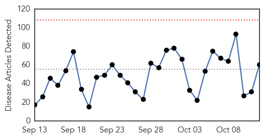
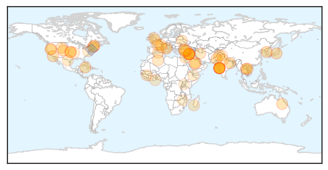

Dengue Fever
30-Day Web Trend
12 alerts, 15 warnings

30-Day Twitter Trend
0 alerts, 0 warnings

Article Locations

Article Confidences

Top Articles:
- 0.997
- Dengue virus ′endemic′ in China, say researchers
- 0.996
- Dengue cases in Delhi breach 10,000 mark, 30 deaths confirmed
- 0.994
- Swineflu case surfaces in Ludhiana, puts authorities into tizzy
- 0.994
- Comprehensive genomic study provides evidence that dengue has become endemic and diverse in China
- 0.993
- Neglected tropical diseases taking hold in U.S.
- 0.990
- Comprehensive genomic study provides evidence that dengue has become endemic and diverse in China
- 0.989
- DOH: Dengue cases rise four times this year - Philippines
- 0.989
- DOH: Dengue cases rise four times this year
- 0.988
- Panic in Kotwa as dengue scare continues unabated
- 0.986
- 3,077 fresh dengue cases in last 1 week; total crosses 10,000 mark
- 0.985
- Panic in Kotwa as dengue scare continues unabated
- 0.960
- Multan expects decline in dengue cases
- 0.895
- Dengue treatment costs a bomb
- 0.796
- Why Your Dog Can Get Vaccinated Against Lyme Disease And You Can’t
- 0.674
- Plan to honeytrap dengue mosquitoes
- 0.666
- 30 diseases that Columbus introduced to the Americas
- 0.659
- Doctors plan global day of climate action « nuclear-news
- 0.572
- City residents vulnerable to threat of dengue
- 0.563
- 30 terrible diseases Christopher Columbus brought to the New World
Top Tweets:
-
No tweets found for Oct 12, 2015
Unknown
30-Day Web Trend
0 alerts, 0 warnings

30-Day Twitter Trend
1 alerts, 0 warnings

Article Locations
Article Confidences

Top Articles:
- 0.999
- South Korean man cleared of Mers tests positive again, Asia News & Top Stories
- 0.994
- Discharged MERS patient re-diagnosed with the virus
- 0.990
- Colorado child polio-like cases being investigated
- 0.956
- Hand, foot and mouth disease hits Savannah Primary
- 0.949
- 8-year-old boy dies of rare, vaccine-derived poliovirus in Laos
- 0.946
- Circulating vaccine-derived poliovirus – Lao People’s Democratic Republic
- 0.929
- Norovirus Outbreak in Reno Area Schools Sickens Over 700
- 0.917
- Chicago Tribune
- 0.917
- Chicago Tribune
- 0.917
- Chicago Tribune
- 0.917
- Chicago Tribune
- 0.917
- Chicago Tribune
- 0.917
- Chicago Tribune
- 0.917
- Chicago Tribune
- 0.917
- Chicago Tribune
- 0.911
- High dose flu shot decreases hospitalizations for nursing home residents
- 0.899
- As world seeks to eradicate polio, Laos suffers vaccine-linked case
- 0.889
- Counterterrorism policies and practices: health and values at stake
- 0.839
- Staff Deaths at Leading Hospital Put India’s TB Battle in Spotlight
- 0.821
- Staff deaths at leading hospital put India's TB battle in spotlight
- 0.819
- Flu vaccine clinics begin around the area
- 0.818
- Staff deaths at leading hospital put India's TB battle in spotlight
- 0.814
- Woman dies of rabies; bat bite blamed for fatality
- 0.805
- Staff deaths at a Mumbai hospital put India’s TB battle in spotlight
- 0.768
- Staff deaths at leading hospital put India's TB battle in spotlight, news, Health News, AsiaOne YourHealth
- 0.757
- 2,184 HIV/Aids cases registered with Pims
- 0.746
- Olive Leaf Remove For Herpes
- 0.732
- Staff Deaths At Leading Hospital Put India's Tuberculosis Battle In Spotlight
- 0.707
- Washington Post reporter Rezaian ‘convicted’ in Tehran
- 0.707
- Six arrested over manhandling of Air France executives
- 0.705
- Snap vote to go ahead despite attacks, Turkish PM says
- 0.705
- Two Tunisian soldiers killed in clashes with jihadists near Algerian border
- 0.705
- Belarus re-elects 'last dictator in Europe' for fifth term
- 0.703
- Iraq probes claims IS group chief Baghdadi wounded in air strikes
- 0.702
- Erdogan under fire after Turkey suffers worst bombing ever
- 0.702
- ‘Knife terror will not defeat us,’ Netanyahu says of Jerusalem stabbings
- 0.694
- Unvaccinated Children In Ukraine At Heightened Risk Of Polio
- 0.693
- Two Madagascans sentenced to life for French couple's murder
- 0.693
- Syrian opposition rejects UN peace talks over Russian offensive
- 0.693
- French PM Valls in Saudi Arabia to sign ‘significant’ armaments deal
- 0.685
- Kazakh dissident tycoon to appeal French extradition order
- 0.685
- Guinea opposition rejects presidential vote, calls for protests
- 0.685
- Pro-EU campaigners launch ‘Britain Stronger in Europe’ drive
- 0.685
- Algeria shuts TV station after airing interview with former Islamist insurgent
- 0.673
- Staff deaths at hospital put TB battle in spotlight
- 0.655
- OUR OPINION: Chickenpox case sets right precedent for infectious outbreaks
- 0.651
- Toddlers in Maine Sickened by Same Strain of E. coli
- 0.648
- CDC Reports Additional Illnesses and DeathNewsInferno
- 0.630
- 6 children die from rabies
- 0.608
- Our View: Chickenpox case sets precedent for Maine outbreaks
Showing top 50 articles...
Top Tweets:
- 0.989
- RT: Flu Attack! How A Virus Invades Your Body http://t.co/DdC8b4qiLF flu virus health
- 0.777
- Otro fin de semana largo y en vez de Hola,diré Muuuuu